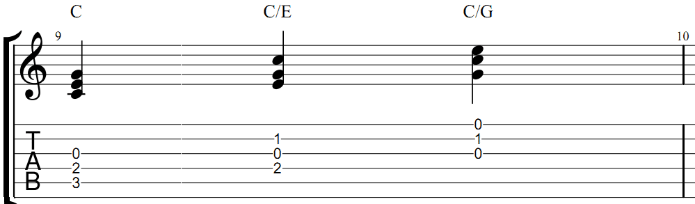

Ниже приведены схемы самых распространенных аккордов для гитары сопровожденных видео. Можно посмотреть как зажимать и послушать звучание. Зная эти основные аккорды, Можно сыграть практически любую композицию. Как правильно читать схемы, можно понять из примера:
Кликайте на название ноты и попадёте на отдельную страницу с видео исполнения, схемами и описанием. Аккорды построенные от ноты:
Здесь нет диезных и бемольных аккордов. Они строятся путем понижения или повышения аккорда, который зажимается с помощью барре. Например, если вы хотите получить F#m, повысьте на пол тона Fm (сдвиньте вперед на один лад). А если хотите получить Bb, понизьте на пол тона B (сдвиньте назад на один лад) и т. д.
Аккорд – это одновременное звучание трех и более звуков. В классическом понимании, эти звуки должны быть расположены по терциям. Терция – это интервал. Что такое интервалы, их обозначение и запись можно ознакомиться здесь. Как правило, любой, даже сложный аккорд в своей основе имеет 3 звука. Аккорды, зажимаемые на гитаре, как правило, состоят больше чем из 3-х звуков. Это происходит за счёт удвоения, или даже утроения, тонов (звуков). В аккорде «С» на рисунке, удваивается основной тон (нота «до») и второй тон (нота «ми»), а в Em основной тон утраивается, а третий тон (нота «си») удваивается.
На рисунке хорошо видно, в ноты они записываются терциями, а по табам их можно увидеть, если цифры расположены друг под другом. Но даже если эти звуки записать по порядку, один за другим, это всё равно будет считаться аккордом, но только разложенным на арпеджио.
Арпеджио – это звуки аккорда сыгранные или записанные последовательно. Когда мы играем, к примеру, последовательность Em-Am-D-G перебором, мы используем арпеджио.
Для лучшего запоминания нот, которые входят в состав аккордов, существует специальное упражнения приёмом арпеджио. Здесь приводятся только 2 варианта арпеджио: обыгрывание мажорного трезвучия от ноты «соль» и минорного от ноты «ля». Сохранив эту аппликатуру, можно, начинать от разных нот на грифе гитары, и таким образом обыграть практически все мажорные и минорные трезвучия.
Если мы хотим записать аккорды для гитаристов, то должны учитывать, что ноты для гитары записываются на октаву выше их фактического звучания (чем, например, для фортепиано). Это сделано для того, чтобы избежать большого количества дополнительных линеек у нотного стана.
Аккорды для гитары делятся на мажорные и минорные. Мажорные имеют строение: большая терция + малая терция (б.3 + м.3), а минорные наоборот: малая терция + большая (м.3 + б.3) Они могут строиться в различных тональностях, но есть такое понятие как «гитарные тональности». Гитарными называются тональности, в которых есть много звуков в открытых позициях, т. е. без барре. Давайте сейчас построим аккорды в двух разных тональностях. Одна гитарная, другая нет.
Как хорошо видно из табулатуры, аккорды в тональности «ми минор» имеют очень много открытых струн (там, где табы показывают 0 – это открытые струны). А в тональности «фа минор» абсолютно все струны в каждом аккорде нужно зажимать. Если все звуки на закрытых струнах, то делать плавные переходы при игре на гитаре и смене аккордов, практически невозможно, особенно, если приходится делать скачки на дальние позиции. Поэтому такая тональность считается не гитарной.
Для того, чтобы не записывать каждый раз аккорды нотами, приняли решение записывать их буквами, и, если у них есть какие-либо надстройки или добавления, то эти надстройки записываются цифрами. Понять соотношение букв и звуков легко. Достаточно вспомнить английский алфавит и обычный звукоряд, но только не от ноты «до», как мы привыкли, а от ноты «ля». A-B-C-D-E-F-G, и, соответственно, ноты: ля-си-до-ре-ми-фа-соль. Буква A соответствует ноте «ля», буква В ноте «си» и т.д. Например Am7. Буква A значит основание аккорда, т.е. звук, с которого он начал формироваться по терциям, «m» — что он минорный, т.е. в его основании лежит малая терция, а цифра 7 означает, что к нему добавлена надстройка. В данном случае седьмая ступень. Об этом подробнее позже. Здесь сразу же нужно сказать о путанице в музыкальном мире в связи с разной трактовкой аккордов от ноты «си». В советской школе принято обозначать аккорд Си – буквой «H», а Си-бемоль – буквой B. Это отличается от современных европейских стандартов, где буква B – это аккорд от ноты «си», а «си-бемоль» обозначается Bb. Откуда взялась эта разница трактовок, сказать сложно. Существует множество теорий на эту тему. Я придерживаюсь современных взглядов, и называю «си-бемоль» — Bb.
Помимо основного вида, существуют так называемые обращения. Это тот случай, когда вместо основного тона, в аккорде «C», к примеру, берётся не нота «до», а второй или третий звук трезвучия. «С» состоит из звуков до-ми-соль. Если мы применим первое обращение трезвучия, то получится, что порядок звуков будет уже такой: ми-соль-до, а записывать он будет C/E. Если применим второе обращение трезвучия, то в басу уже окажется третий звук – соль-до-ми Записываться он будет C/G.
Обращения трезвучий применяются в музыке часто, и значительно украшают музыку. Из практических примеров можно вспомнить песню ДДТ – Это всё. Песня начинается с аккордов: G – D – Em – C. Однако вместо D здесь используется первое обращение трезвучия и получается D/F#, что придаёт этому месту особую красоту.